Obsidian – Zettlr – ♥ Pandoc ♥ – (et Zotero)

UPPA – Service Commun de la Documentation
<-- Formation des usagers -->
Julien Rabaud (Service d’appui à la recherche)
julien.rabaud@univ-pau.fr | @ujubib
v.2021.09
Sarah Simpkin : Getting Started with Markdown - The Programming Historian, novembre 2015, mise à jour mai 2020.
Émilien Ruiz : Apprendre à écrire ? - La boîte à outils des historien·ne·s, avril 2020.
Éliane Caillou : “Stylo” : l’éditeur de texte SHS d’Huma-Num - com&doc, novembre 2020.
Sur Le blog d’Arthur Perret (doctorant en SIC à Bordeaux) :
Tennen D. & Wythoff G. : Sustainable Authorship in Plain Text using Pandoc and Markdown - The Programming Historian, mars 2014, mise à jour juillet 2020.
Les fabriques de publication, Série de fiches sur le Carnet de quaternum.net , le site d’Antoine Fauchié.
Sur Le blog de Hendrik Herz (le doctorant qui développe Zettlr)
Academic Pandoc template : Pour comprendre certaines options de Pandoc.
Mentions du format Markdown dans la thèse (Esthétique et Arts appliqués, Rennes, 2020) de Robin de Mourat : Le Vacillement des formats. Matérialité, écriture et enquête : le design des publications en Sciences Humaines et Sociales.
Fichiers binaires : nécessitent un logiciel spécifique pour être lus et édités :
.docx, .odt, .pdfFichiers textes : lisibles et modifiables dans un simple éditeur de texte :
.md, .html, .tex, .rst…Markdown est un langage de balisage léger créé en 2004 par John Gruber avec l’aide d’Aaron Swartz. Il a été créé dans le but d’offrir une syntaxe facile à lire et à écrire. Un document balisé par Markdown peut être lu en l’état sans donner l’impression d’avoir été balisé ou formaté par des instructions particulières.
Wikipedia (fr) : Markdown
> Le billet du regretté Aaron Swartz
#CultureNum : documentaire The Internet’s Own Boy: The Story of Aaron Swartz
(sous-titres en plusieurs langues disponibles)
.rmd)Le plus clair, complet(*) et synthétique. Contient :
(*) Ne traite pas des références bibliographiques, spécificité de Pandoc.
Voir Manuel Pandoc, Citations
inline| markdown | html | affichage |
|---|---|---|
*italique* ou _italique_ |
<em>italique</em> |
italique |
**gras** |
<strong>gras<strong> |
gras |
***gras italique*** |
<strong><em>gras italique</em></strong> |
gras italique |
~~barré~~ |
<s>barré</s> |
|
XIX^e^ |
XIX<sup>e</sup> |
XIXe |
H~2~O |
H<sub>2</sub>O |
H2O |
[texte](url) |
<a href="url">texte</a> |
texte |
[texte]{.style} |
<span class="style">texte</span> |
texte |
{width=160px}
<img src="img/UPPA_logo-rose.png" alt="caption" width=160px/>
Pas du markdown standard mais adoptés par tous ces outils (+ Zettlr)
#tags[[wikilinks]]- [ ] To Do listsExtensions pour VS Code
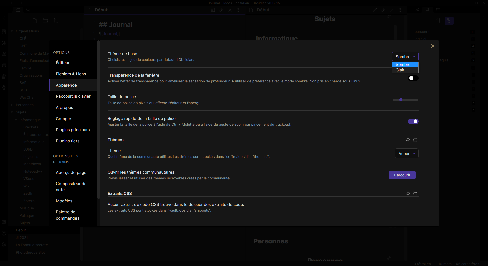
interface générale
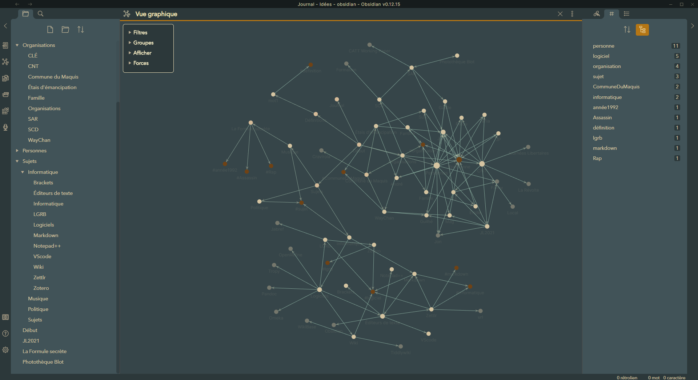
GraphView (Thème : Pisum)
 Thème : Newsprint ; Modes Focus & Typewriter |
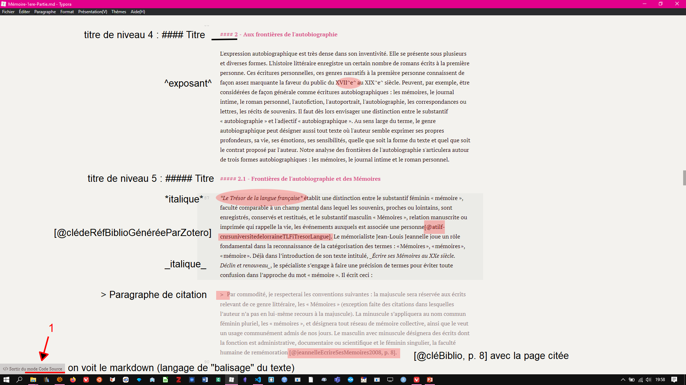 Mode Code Source [commenté] |
|
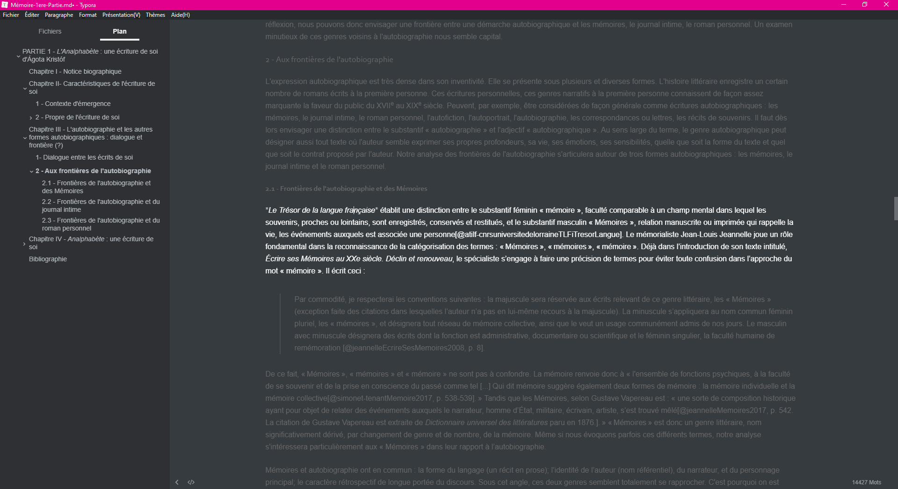 Thème : Night ; Mode Focus |
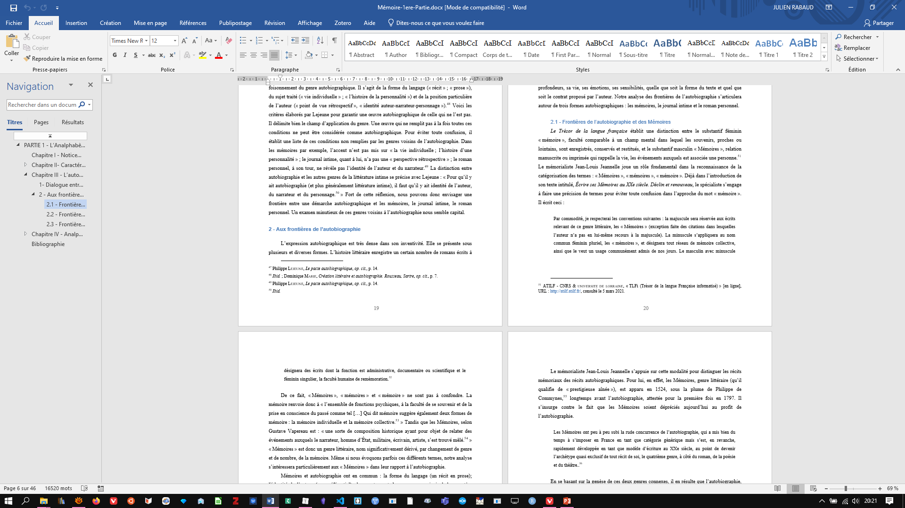 Résultat dans Word (via Pandoc) |
Markdown de BureauMarkdown En ligneRstudio (avec Rmarkdown)
Documentation pour Markdown/Pandoc
1- Exporte une collection Zotero dans un fichier .json ou .bib et garde le fichier synchronisé avec la collection.
|
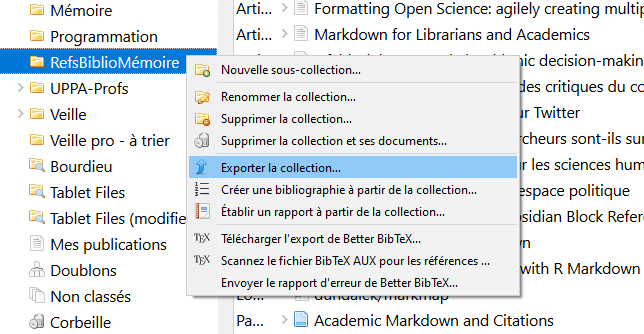 Mettre toute ses références dans une collection. Puis clic-droit : Exporter la collection
|
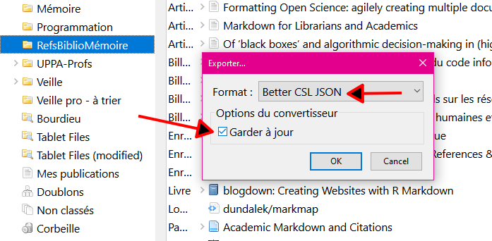 Choisir le format Better CSL JSON ou Better BibTeX...Et cocher Garder à jour |
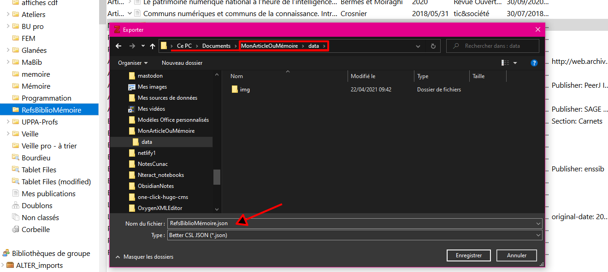 Exporter dans le dossier data du répertoire d'écriture
|
2- Ajoute un convertisseur pour le Quick Copy (ctrl+shift+c) qui met dans le presse-papier [@clédelaréf]
|
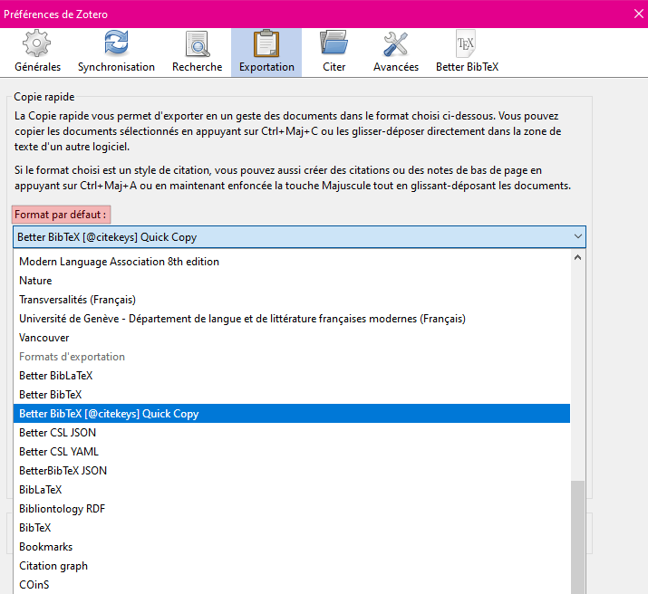 Choisir Better BibTeX [@citekeys] Quick Copy comme format de sortie par défaut
|
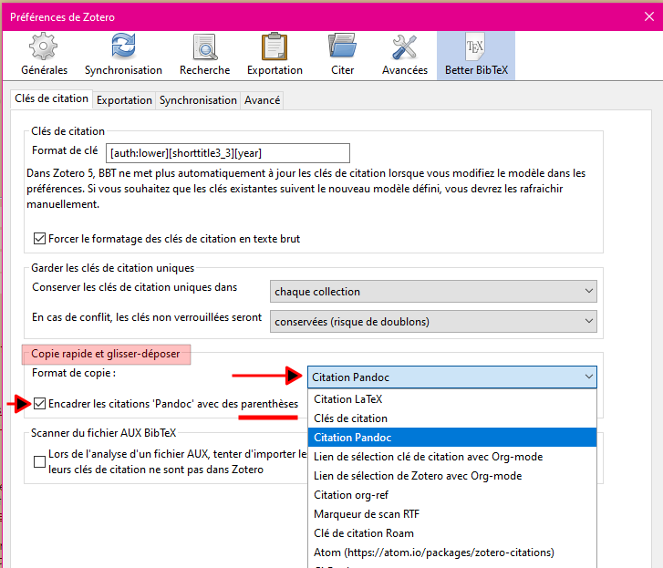 Paramétrage des préférences de BetterBibTeX |
Exporte en markdown (vers un dossier, pour Obsidian ou Zettlr)
|
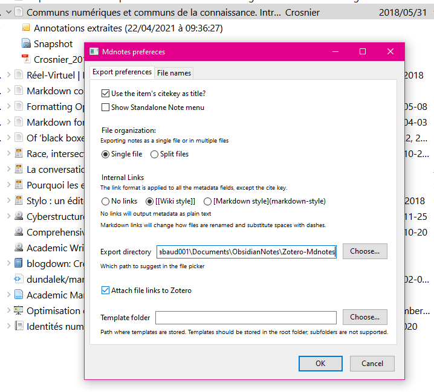 Zotero > Outils > Mdnotes preferences |
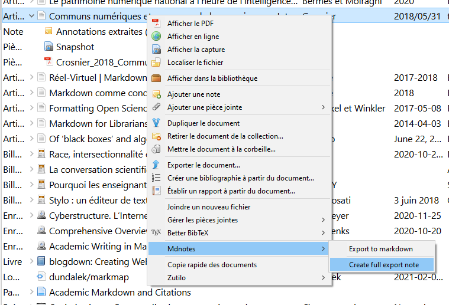 Clic-droit (sur une référence) > Mdnotes > Create full export note |
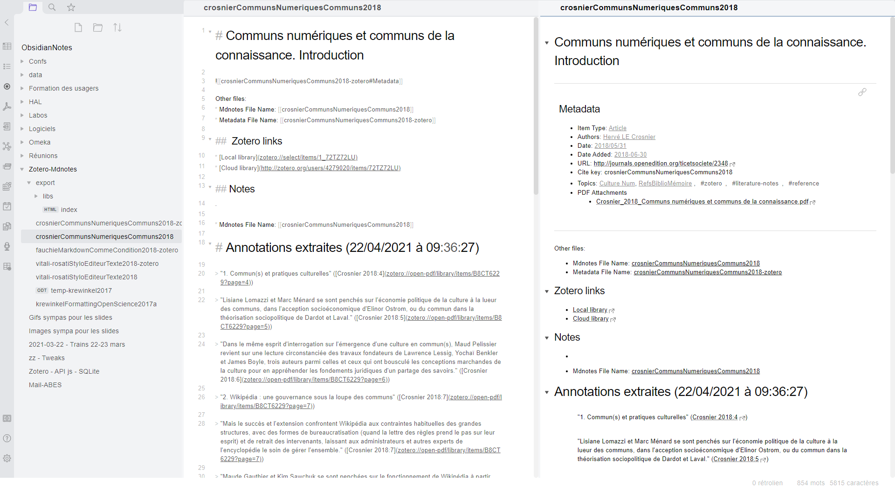 Résultat dans Obsidian |
VS Code : taper Zotero dans le gestionnaire de plugin
Obsidian : sur le forum, Zotero best practices
Documentation Zettlr : Citer avec Zettlr
Ressource indispensable : Pandoc User’s Guide
pandoc -f 'format' -t 'format' (from, to)Pour se familiariser avec les commandes : Page d’exemples
Convertir une page web en fichier word (ou markdown)
pandoc -r html https://fr.wikipedia.org/wiki/Aaron_Swartz -o AaronSwartz.docx
pandoc -r html https://fr.wikipedia.org/wiki/Aaron_Swartz -o AaronSwartz.md
markdown vers word, avec modèle et bibliographie
pandoc
-s
--reference-doc styleBraud.docx
-C
--bibliography=data/BiblioInventaire.json
--csl=data/gallia-prehistoire.csl
-o mémoire.docx
mémoire.md
markdown vers html
avec bibliographie et sommaire (cliquables), template, css et javascript (ex: Inventaire Blot)
pandoc
-s
--toc
--template=data/templateHtml.html
--include-in-header=data/css_mémoire.css
--include-in-header=data/js_mémoire.js
-C
--bibliography=data/BiblioInventaire.json
--csl=data/gallia-prehistoire.csl
--metadata link-citations=true
-o mémoire.html
mémoire.md
Une bonne porte d’entrée vers

pandoc -f markdown -t latex -o mémoire.tex mémoire.md
puis ouvrir avec un éditeur TeX (Overleaf par exemple).
Diaporama, diagrammes, Mindmap
Produire un diaporama : Reveal.js
ou Beamer (LaTeX, pdf), Slideous (html), Slidy (W3C, html), DZSlides (html), S5 (html)
Via Pandoc (comme Zettlr) ou extension VS Code : vscode-reveal
Dessiner des Schémas et graphiques : Mermaid.js
Flowchart, Sequence diagram, Class Diagram, State Diagram, Entity Relationship Diagram, User Journey, Gantt, Pie Chart
Dessiner des graphiques : Draw.io Integration dans VS Code (support de mermaid)
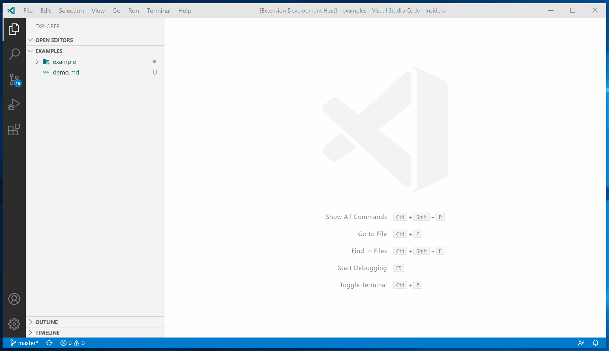
Vue MindMap : Markmap.js
extension Obsidian : Obsidian Mind Map | extension VS Code : markmap-vscode
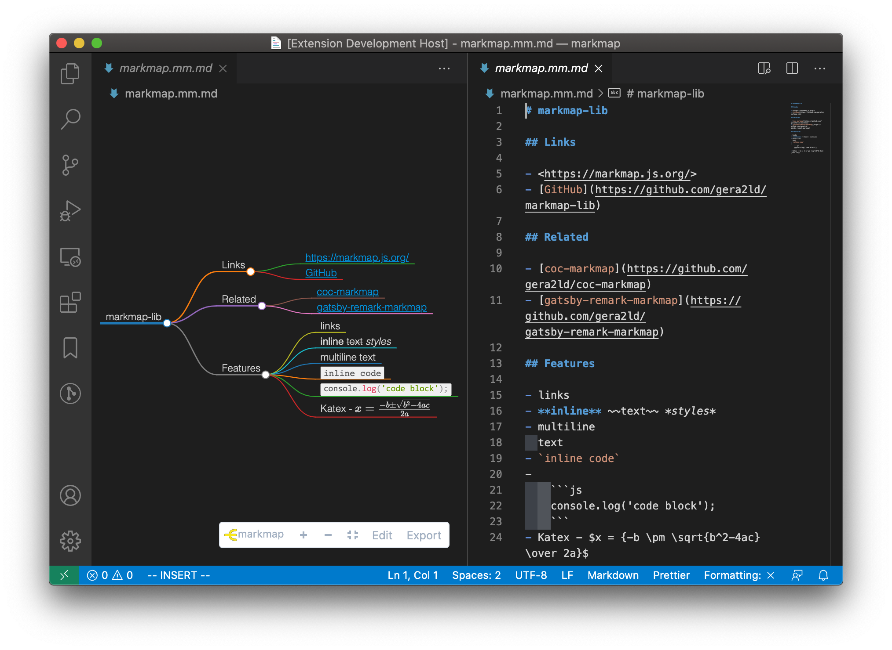{kind=link}
{kind=link}